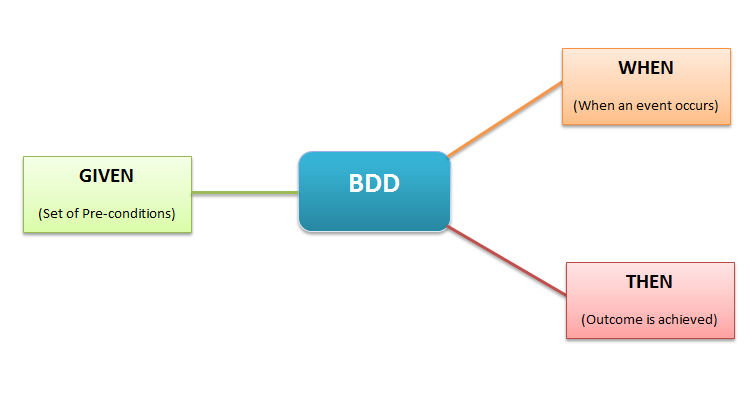
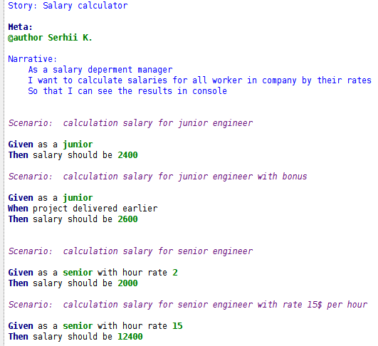
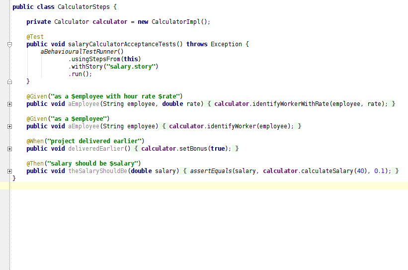
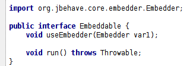

Behaviour Driven Development (BDD)
Serhii Kartashov
December 2014
SoftServe
Agenda
- The meaning of BDD and specification
- JBehave as implementation of BDD
The meaning of BDD
BDD specifies that business analysts and developers should collaborate in terms of user story, which are each explicitly written down in a dedicated document.

Behavioural specifications
User Story Structure:
- Story Title
- Narrative: who, which effect and what business value
- Acceptance criteria or scenarios: initial condition, event triggers and expected outcome

JBehave Implementation
Create file with *.story extension which describes the story.
You can save it anywhere (classpath, directory, package)



Conclusion
- BDD offers more precise guidance on organizing the conversation between developers, testers and domain experts
- Notations originating in the BDD approach, in particular the given-when-then canvas, are closer to everyday language
- Tools targeting a BDD approach generally afford the automatic generation of technical and end user documentation from BDD "specifications"
Useful links